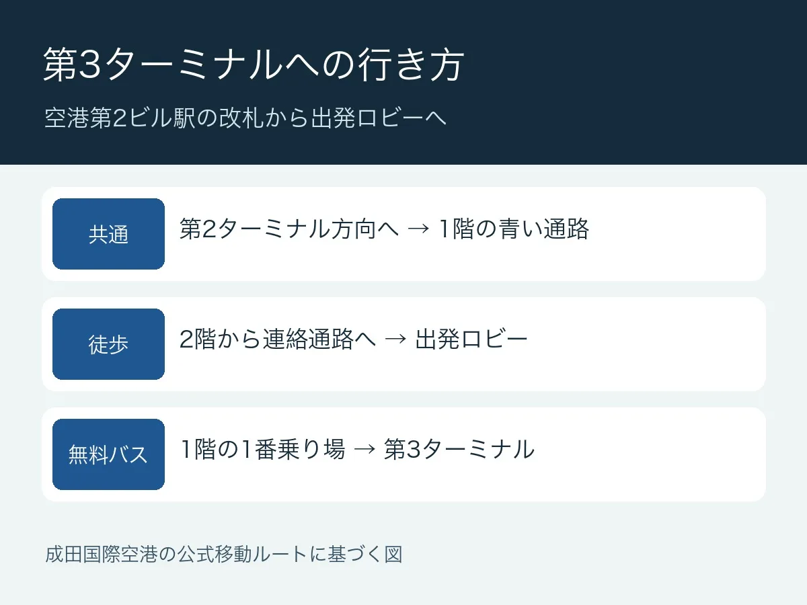
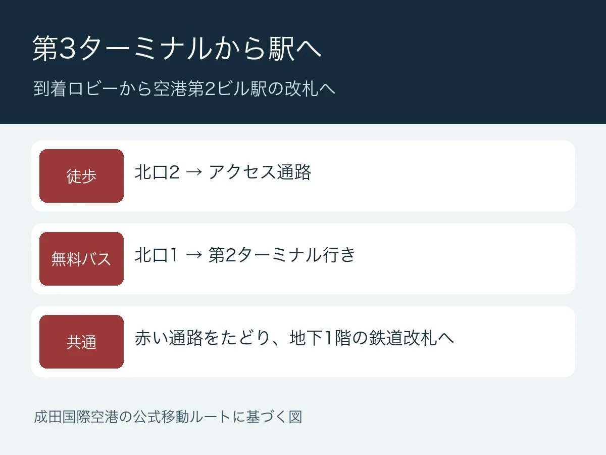

成田空港の第3ターミナルへ電車で行くなら、空港第2ビル駅で降ります。改札から第3ターミナルの出発ロビーにある案内カウンターまでは徒歩約13分で、第2ターミナルから無料の連絡バスも使えます。2026年11月24日時点の空港公式案内をもとに、鉄道を降りてからの行き方を比べます。
01成田空港第3ターミナルは何駅で降りる？
降りる駅は「空港第2ビル駅」です。「成田空港駅」は第1ターミナル側の駅です。乗る電車を調べる段階で、航空券や航空会社の案内を見て出発ターミナルを確認し、検索や乗換案内で入力する駅名を決めておきましょう。
空港第2ビル駅の改札を出たら、第2ターミナル方向へ進みます。自動ドア手前の左側から1階へ上がり、青い通路を進むところまでは徒歩でもバスでも共通です。通路を進んだ後に、連絡通路へ上がるか、バス停まで進むかが分かれます。

02第3ターミナルまで徒歩と無料バスはどちらが便利？
| 方法 | 空港内の追加支払い | 空港公式の所要時間 | 選ぶ目安 |
|---|---|---|---|
| 徒歩 | 0円 | 改札から第3ターミナル2階の出発ロビー内案内カウンターまで約13分 | バスを待たずに進みたい |
| 第2・第3ターミナル循環バス | 0円 | 第2から第3へ乗車約6分 | 手荷物が多く、通路を歩く距離を抑えたい |
空港公式の徒歩経路と連絡バスを、空港第2ビル駅から第3ターミナルへ向かう場合の追加支払額で比べると、どちらも0円です。連絡バスは通常の利用で無料なので、割引クーポンの取得は不要です。比較範囲は駅到着後の空港内移動です。確認は同日23時台（日本時間）です。徒歩の所要時間・連絡バスの乗り場と運行案内。
バスの約6分は乗車時間です。改札から停留所までの徒歩、停留所での待ち時間、降車後にロビーへ入るまでの移動は別に見込んでください。バスは道路混雑で遅れる場合があります。徒歩の約13分も、案内カウンターまでの目安です。
注意徒歩の所要時間には、案内カウンターからチェックインカウンターへの移動や出発手続きが含まれません。工事などで経路や時間が変わる場合もあります。
03無料バスの乗り場と徒歩の分かれ道
- 徒歩なら、青い通路を進んだ先で2階へ上がり、アクセス通路を渡って第3ターミナルの出発ロビーへ向かいます。
- バスなら、第2ターミナルの1階にある1番乗り場へ向かいます。第3ターミナル行きの表示を確認して乗車し、着いたら館内への案内に従って2階へ向かいます。
早朝や夜にバスを使う予定なら、空港公式の乗り場欄で運行間隔と始発・最終を先に確認しましょう。荷物が少なく、次のバスまで時間があると分かった場合は、徒歩に切り替えやすくなります。駅から目的地までの歩く区間を短くしたい旅では、仙台駅からホテルへのアクセス案内でも、駅の出口から先の行き方を紹介しています。
04帰りに第3ターミナルから駅へ戻るには？
到着ロビーからは、バスなら北口1、徒歩なら北口2へ向かいます。バスは第2ターミナル行きに乗ります。第2・第3ターミナル循環バスの第3から第2への乗車時間は約3分です。徒歩は連絡通路を経由し、空港公式では第3ターミナル1階到着ロビーの案内カウンターから空港第2ビル駅の改札まで約13分です。第2ターミナル側では赤い通路に従い、地下1階の鉄道改札へ進みます。

05よくある質問
成田空港第3ターミナルの最寄り駅は？
空港第2ビル駅です。改札を出たら第2ターミナルの方向へ進みます。
第3ターミナルまでは歩いて何分ですか？
空港第2ビル駅の改札から、出発ロビー内の案内カウンターまで約13分です。
第3ターミナル行きの連絡バスは無料ですか？
無料です。空港第2ビル駅から向かう場合は、第2ターミナル1階の1番乗り場を使います。
06まとめ
- 成田空港第3ターミナルへ電車で向かうなら、空港第2ビル駅で降ります。
- 徒歩は改札から案内カウンターまで約13分。無料バスは乗車時間に待ち時間と乗降前後の移動を足して考えます。
- 帰りの出口は、バスが北口1、徒歩が北口2です。